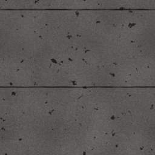

← All scout pages · Public copy, pages as of 2026-10-16 23:41. A Poly Haven prospect shows our own copy of its CC0 colour map, flat and unlit (Poly Haven’s previews are not CC0; its page has the lit one). The offline 3D viewer stays on the owner’s machine.
Roofing scout — CC0 prospects
Every Roofing row that the 16 Oct material grid uses or proposes (docs/plans/SURFACE_LIST-proposed-2026-10-16.md, commit d770ab5c), with up to three CC0 prospects from Poly Haven and ambientCG. The first card in each row is the best fit. Real photos are preferred; a generated (computer-made) set is listed only when neither library has a photo of that look, and it is marked. Built 2026-10-16 by the scout roofing trigger, run read-only: nothing in the game or the records changed and nothing was downloaded at full size.
3D: an ambientCG prospect's picture opens ambientCG's own 3D preview; a Poly Haven prospect's page has its 3D preview. Our offline viewer of the game's own maps is not on this public copy.
9rows scouted (of 13 looks in Roofing)
5with a real photo of the look
4with nothing real (weak fits, generated or none)
24prospects
Left out — marked [UNUSED?] in the list (no grid cell uses them): Clay barrel tile, Concrete roof tile, Thatch, Solar panel.
Now in the game code-drawn · list: used by the grid drawn by code: dino_game_rnd/surface_gen/gen_roofing_asphalt_shingle_3_tab.py Thumbnail: the game's drawn picture
WEAK FIT — NOTHING REAL
No asphalt shingle in either library. grey_roof_01 is dark flat interlocking tiles in staggered rows that read like 3-tab from a distance; bitumen is the asphalt roofing material itself, with no tabs. Both weak. ambientCG's RoofingTiles sets are computer-made slate and clay tiles, not shingles.
Route: Material Maker is the likely route: granule noise (bitumen's grain) under a staggered tab layout with shadow lines.
Now in the game code-drawn · list: used by the grid drawn by code: dino_game_rnd/surface_gen/gen_roofing_asphalt_shingle_architectural.py Thumbnail: the game's drawn picture
WEAK FIT — NOTHING REAL
No asphalt shingle in either library. roof_slates_02's uneven overlapping grey-brown slates have the ragged look of laminated shingles; grey_roof_01 and bitumen as for 3-tab. All weak.
Route: Material Maker is the likely route: the 3-tab build with random tab widths and a darker shadow band.
Now in the game code-drawn · list: used by the grid drawn by code: dino_game_rnd/surface_gen/gen_roofing_wood_shake.py Thumbnail: the game's drawn picture
WEAK FIT — NOTHING REAL
No photo of wood shakes or shingles in either library. WoodSiding013 and WoodSiding011 are computer-made wood shingles, close to our drawing, listed because no photo exists. exterior_wall_cladding_02 is a real photo of small staggered boards, a weak stand-in.
Route: The computer-made sets are near-exact; a computer-made pick needs your ruling (GENERATED_ALLOWED). Otherwise material Maker is the likely route: staggered shake rows over a real plank photo's grain.
Now in the game code-drawn · list: used by the grid drawn by code: dino_game_rnd/surface_gen/gen_roofing_slate_roof.py Thumbnail: the game's drawn picture
PHOTO
Photos of slate roofs. roof_slates_03 is even grey slates in regular rows like ours; grey_roof_tiles_02 has the blue-grey with moss in the seams; roof_slates_02 is uneven, grey-brown.
Now in the game code-drawn · list: used by the grid drawn by code: dino_game_rnd/surface_gen/gen_roofing_standing_seam_metal.py Thumbnail: the game's drawn picture
WEAK FIT — NOTHING REAL
No standing-seam roof in either library. box_profile_metal_sheet is the nearest real photo: painted steel roofing, but with trapezoidal box ribs close together and red, where standing seam has flat pans and a thin raised seam every 40–60 cm. Weak.
Route: Material Maker is the likely route: a flat steel pan with a raised seam line; the flat steel already under review in Metal (Metal014) could give the metal.
Now in the game code-drawn · list: used by the grid drawn by code: dino_game_rnd/surface_gen/gen_roofing_corrugated_metal_roof.py Thumbnail: the game's drawn picture
PHOTO
Photos of galvanised corrugated roofing. corrugated_iron has our weathered silver with rust streaks; corrugated_iron_02 is cleaner with wider ribs; worn_corrugated_iron has peeling paint. (corrugated_iron_03 is already pulled for Metal's corrugated steel wall.)
The picture opens our 3D viewer — downloaded, not in the game yet (on the owner’s machine only)
07
Rolled / tar roofing
roofing_rolled_tar_roofing

Now in the game code-drawn · list: used by the grid drawn by code: dino_game_rnd/surface_gen/gen_roofing_rolled_tar_roofing.py Thumbnail: the game's drawn picture
PHOTO
bitumen is a photo of a real bitumen roof, cracked tar with horizontal streaks (20 m wide, so its detail is coarse at 2K). clean_asphalt (dark, fine grain, a faint seam) and Asphalt031 (light grey grit) are road photos whose grit stands in for mineral-surfaced roll roofing. None shows the lap lines every ~0.9 m.
Now in the game code-drawn · list: used by the grid drawn by code: dino_game_rnd/surface_gen/gen_roofing_built_up_gravel_roof.py Thumbnail: the game's drawn picture
PHOTO
Gravel040 is loose grey crushed stone like a ballasted roof; tarred_gravel is gravel set in dark tar (the built-up surface where the gravel has worn thin); gravel_floor_02 is paler, finer gravel.
Now in the game code-drawn · list: used by the grid drawn by code: dino_game_rnd/surface_gen/gen_roofing_sod_green_roof.py Thumbnail: the game's drawn picture
PHOTO
No photo of a planted green roof (sedum mat) in either library. These are real moss-over-soil photos with the same patchy green on dark earth: brown_mud_leaves_01 is closest; Moss001 is small low plants (45 cm across); forest_leaves_02 moss with brown litter. This look sits near the terrain-and-plants list; a moss ground there could be shared.

 CC0 colour map · our copy
CC0 colour map · our copy